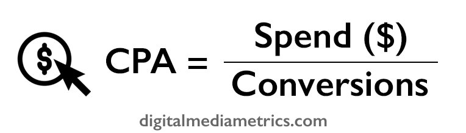

What is a cost per acquisition?
Cost per acquisition (CPA) in digital marketing is the aggregate
measure of how much it costs to drive one
conversion.
It is used when analysing campaign results as it lets the marketer
understand which digital channel, vendor or ad is driving the most
cost efficient performance. While conversion rate is useful to
understand what has been effective at converting your audience, the
CPA provides the understanding of cost-efficiency.
An example of CPA calculation, if you have spent $100 on PPC ads
on Google and it has driven 5 conversions your CPA would be $20. Once you work
out the CPA for all vendors, the targeting within each vendor and
which ads are performing the strongest, you can then, at a very
granular level, optimise your campaign spend to ensure you are
getting the most efficient performance out of the budget spent.
When you combine CPA with understanding the CLV (customer lifetime
value) of each conversion, you have a powerful set of metrics
which can be used to confidently optimise your marketing spend as
effectively and efficiently as possible.
CPA is often referred to as cost per action - both terms meaning
the same thing.
The CPA meaning can also refer to a buying model of only paying
the vendor for when an action or acquisition has occurred. We discuss
this in a later section of this article.
Cost per acquisition formula
To calculate cost per acquisition, you will need the following metrics:
1. Spend
2. Conversions

How to improve and decrease CPA
At a top-level basis, if you were to reduce budget on high CPA
vendors, ads and targeting methods, and upweight the more efficient
performers, then your campaign CPA will decrease.
Within paid channels, especially biddable channels, to improve CPA
you should aim to improve your quality score (Google Adwords) and
improve the relevance score (Facebook) to lower you
CPMs and
CPCs.
By lowering your bids, you may not see that large of a drop-off,
meaning there could be efficiencies to be found.
A re-targeting strategy can also be far more efficient than prospecting.
By tagging up your site and app of all stages of the funnel, you will
be able to re-target on a granular level and reach warmer users who
have shown interest but not converted and target lookalike audiences
of those who share similarities with previous convertors. These
strategies will nearly always produce lower CPAs than prospecting
colder audiences.
Eventually there will be a limit to how much the paid media can be
improved, which means you will have to consider improving the landing
page experience (conversion rate optimisation on the website),
adding more enticing pricing or offers, adding sale periods or
improving the creative messaging and copy.
Buying impressions and inventory on a CPA basis
The majority of
impressions are bought on a
CPM or CPC
basis. Another method of buying impressions is on a CPA basis, which means you only
pay for when the
impressions drive a conversion. The benefit of this method is that
you know exactly how much you are paying for one
conversion
and can therefore understand the efficiency of the channel or
vendor you are using from the beginning.
This is common in affiliate networks, whereby websites will advertise
a product or service of another company’s and will earn a commission %
off the value of the
conversion.
The downside of this is that some of the inventory and websites that
your brand will be appearing on may not be as brand safe or premium as
others. This means if you wish to shift brand perception, this method
of buying is not advised. A CPA buy is far more relevant for
performance or direct
response campaigns whereby you are purely focused on generating
conversions.